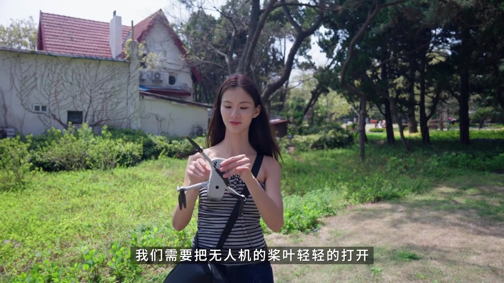
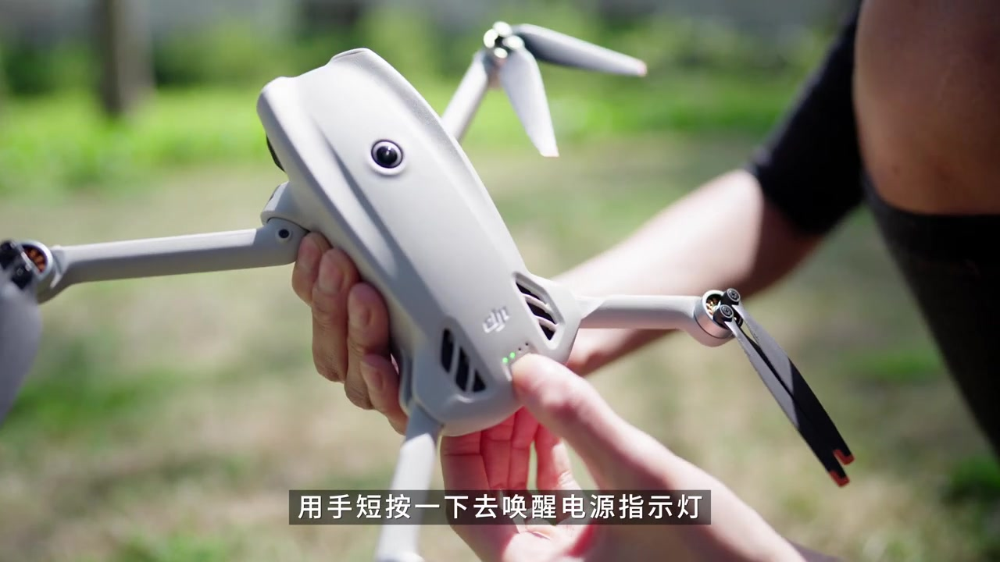
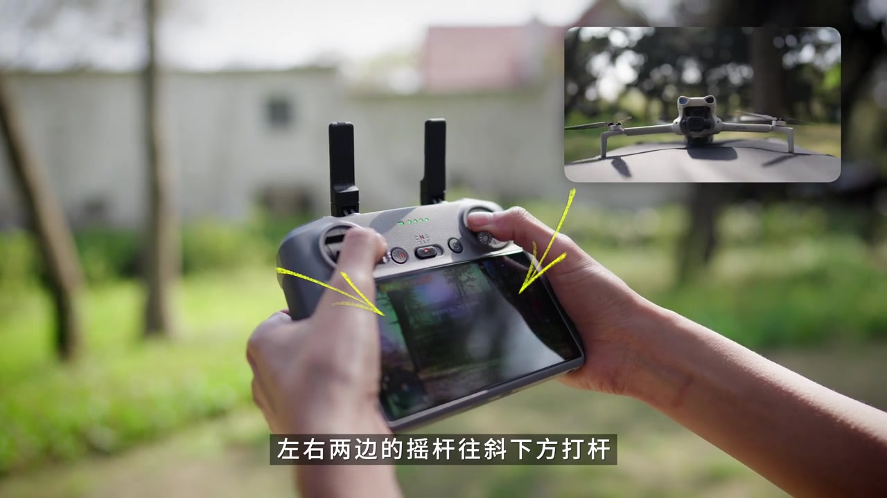
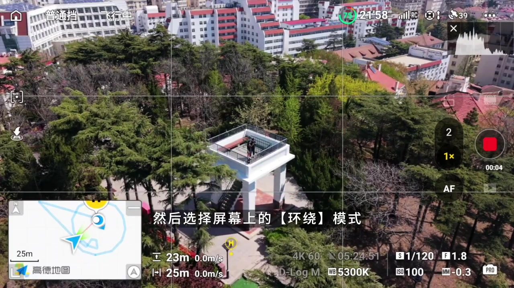
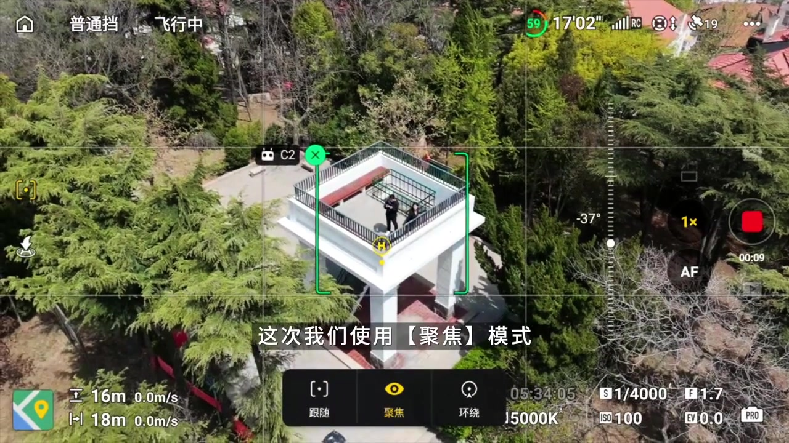
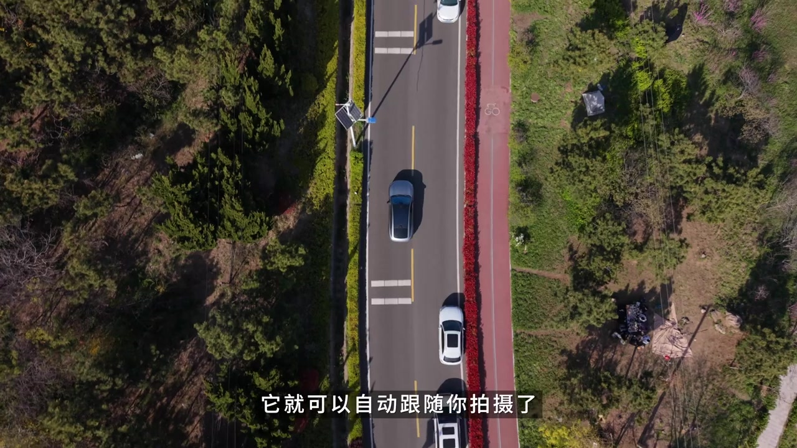
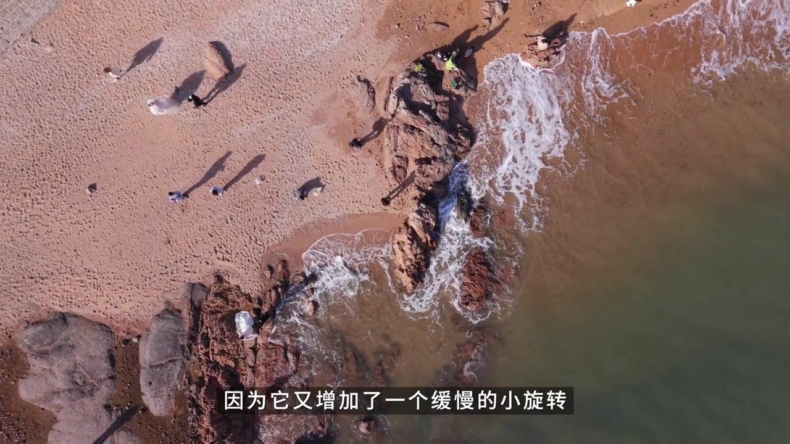

01
中文
三分钟学会起飞。
EN
Learn to take off in three minutes.
表达提示takeoff（起飞）
Scene English · 无人机入门
Beginner Drone Flight in 3 Minutes
🎧 语音讲解
Opening: First Takeoff
情境三分钟教会你起飞，从开箱到起飞新手保姆级教学开始。
三分钟学会起飞。
Learn to take off in three minutes.
表达提示takeoff（起飞）
保姆级教学。
Hands-on, step by step.
表达提示step by step（一步步）
用takeoff换一种说法
用step by step换一种说法

Unbox and Check
情境先开箱检查：机身、遥控器、电池、备用桨叶，桨叶分正反方向。
开箱检查配件。
Check every part in the box.
表达提示accessory（配件）
桨叶分正反。
Blades have a correct side.
表达提示blade（桨叶）
用accessory换一种说法
用blade换一种说法

Activate and Update
情境开机激活，APP 连上后完成固件更新，这是飞前必做的准备。
开机激活连APP。
Power on and connect the app.
表达提示app（应用）
固件更新必做。
Update the firmware first.
表达提示firmware（固件）
用app换一种说法
用firmware换一种说法

Find Open Space
情境起飞前找空旷无人的场地，避开人群、电线、树木和禁飞区。
找空旷场地。
Pick a wide-open spot.
表达提示open space（开阔地）
避开电线树木。
Avoid wires and trees.
表达提示obstacle（障碍物）
用open space换一种说法
用obstacle换一种说法

The Takeoff
情境遥控器拨杆向下启动电机，然后内八解锁，轻推油门离地。
内八解锁启动。
Arm the motors with the sticks.
表达提示arm（解锁）
轻推油门离地。
Push the throttle gently.
表达提示throttle（油门）
用arm换一种说法
用throttle换一种说法

Practice Hovering
情境先练习悬停，稳住高度和方向，熟练后再尝试前后左右移动。
先练悬停。
Master hovering first.
表达提示hover（悬停）
稳住再移动。
Steady, then move around.
表达提示steady（稳定）
用hover换一种说法
用steady换一种说法

The Landing
情境降落时慢慢压低油门，触地后保持几秒再收杆，稳稳降落不炸机。
慢压油门降落。
Lower the throttle slowly.
表达提示throttle（油门）
触地保持再收杆。
Hold still after touchdown.
表达提示touchdown（触地）
用throttle换一种说法
用touchdown换一种说法

Safety Notes
情境电量低于30%就返航，牢记限高限远，新手先小范围熟悉操作。
低电量就返航。
Return when battery gets low.
表达提示return（返航）
新手小范围练习。
Newbies stay close.
表达提示range（范围）
用return换一种说法
用range换一种说法
用「takeoff」替换表达
用「step by step」替换表达
用「accessory」替换表达
用「blade」替换表达
用「app」替换表达
用「firmware」替换表达
用「open space」替换表达
用「obstacle」替换表达
用「arm」替换表达
用「throttle」替换表达
用「hover」替换表达
用「steady」替换表达
用「throttle」替换表达
用「touchdown」替换表达
用「return」替换表达
用「range」替换表达
固件不更新可能炸机
避开人群电线树木禁飞区
触地保持几秒再收杆